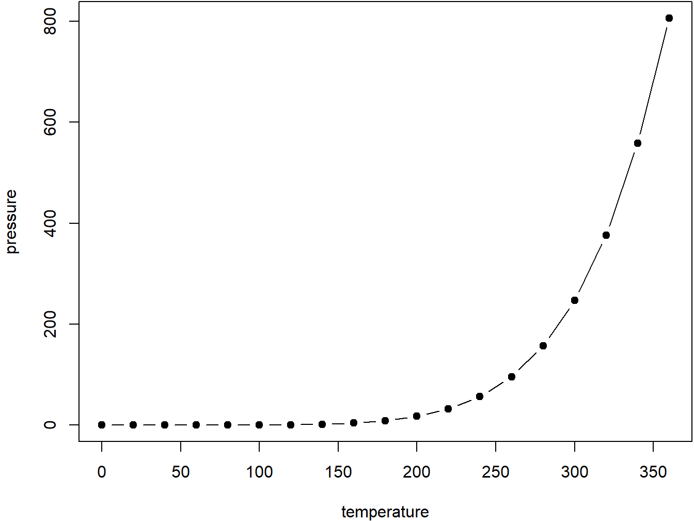

1.2 Captioned figures and tables
Figures and tables with captions can also be cross-referenced from elsewhere in your book using \@ref(fig:chunk-label) and \@ref(tab:chunk-label), respectively.
See Figure 1.1.
> par(mar = c(4, 4, .1, .1))
> plot(pressure, type = 'b', pch = 19)
Figure 1.1: Here is a nice figure!
Don’t miss Table 1.1.
> knitr::kable(
+ head(pressure, 10), caption = 'Here is a nice table!',
+ booktabs = TRUE
+ )| temperature | pressure |
|---|---|
| 0 | 0.0002 |
| 20 | 0.0012 |
| 40 | 0.0060 |
| 60 | 0.0300 |
| 80 | 0.0900 |
| 100 | 0.2700 |
| 120 | 0.7500 |
| 140 | 1.8500 |
| 160 | 4.2000 |
| 180 | 8.8000 |